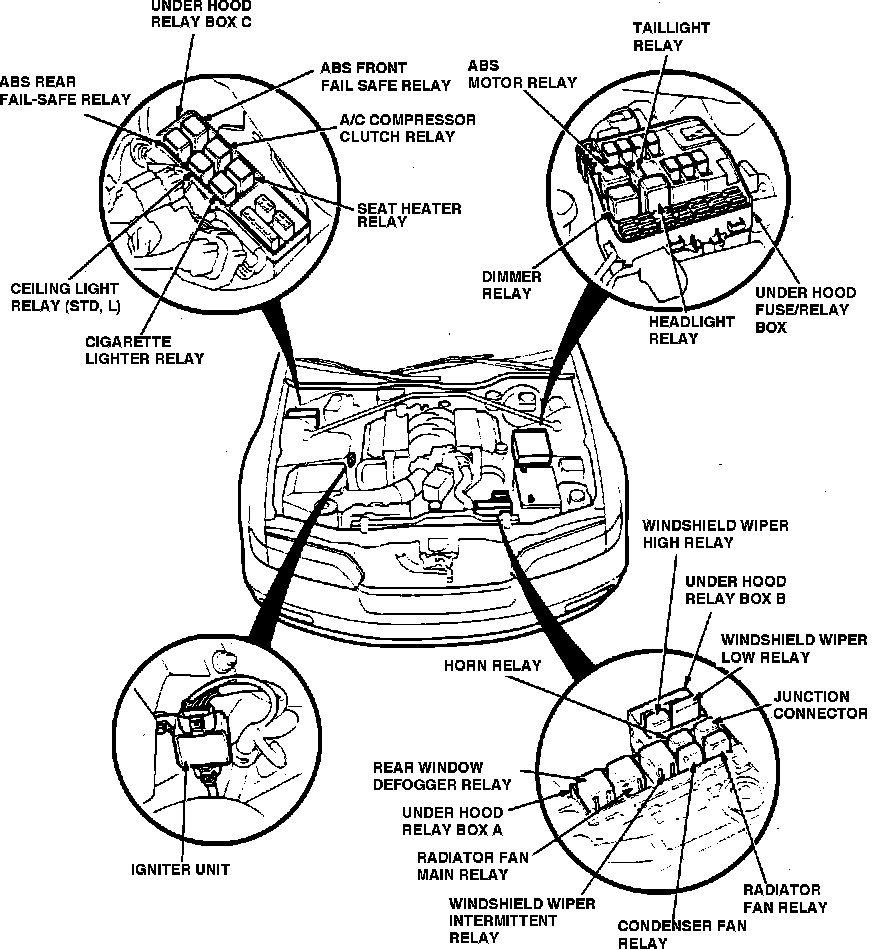

Operation CHARM
: Car repair manuals for everyone.
Home
>>
Acura
>>
1992
>>
Legend Coupe V6-3206cc 3.2L SOHC FI
>>
Repair and Diagnosis
>>
Lighting and Horns
>>
Dome Lamp
>>
Dome Lamp Relay
>>
Locations
Dome Lamp Relay: Locations
Engine Compartment Relays & Control Units:

In Underhood Relay Box C